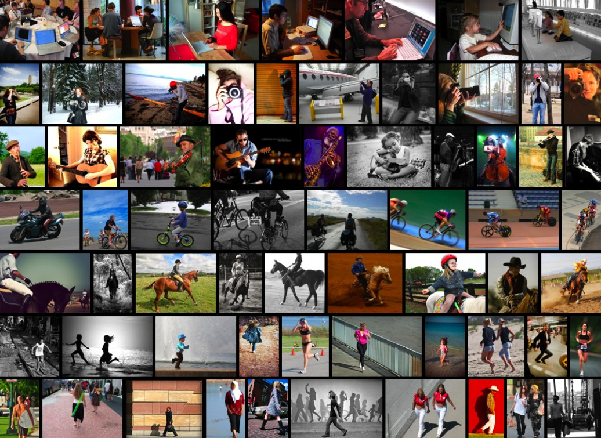
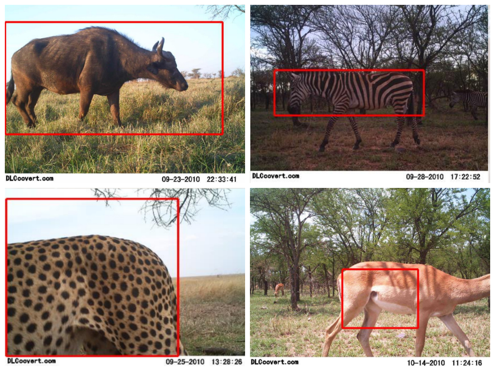
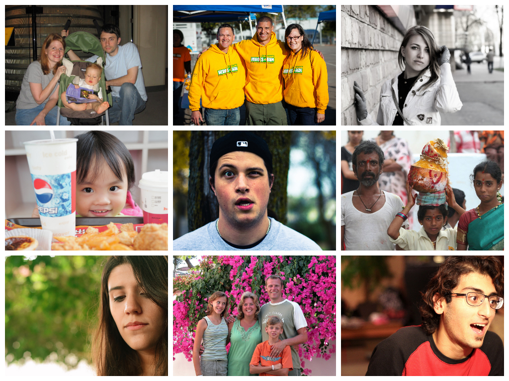
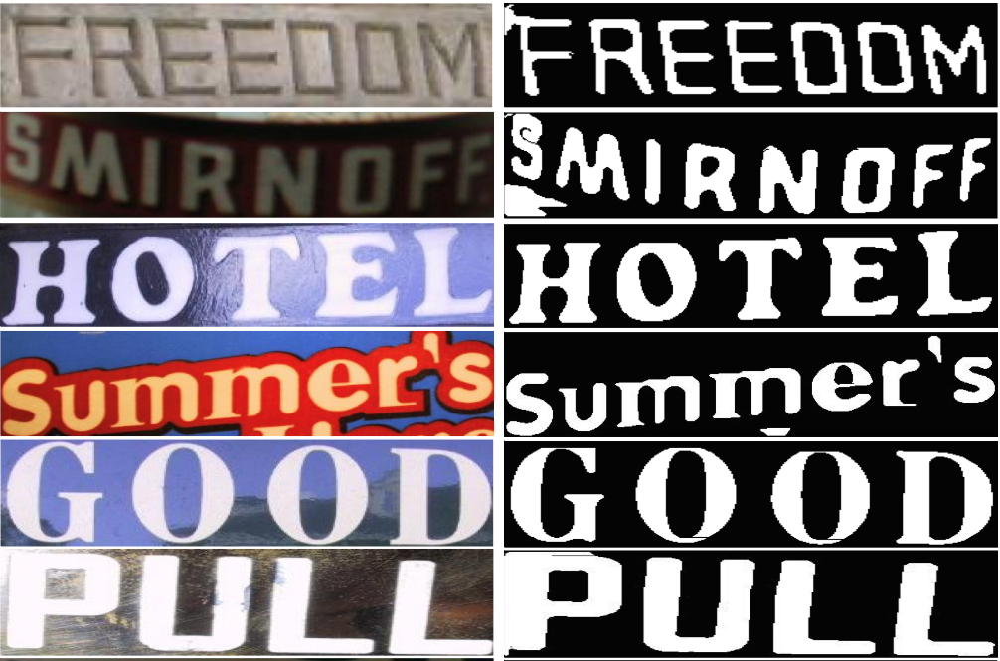

|
Amey Dharwadker I'm a graduate student in Electrical Engineering at Columbia University, where I am advised by Shih-Fu Chang. I expect to graduate in December 2014.
|
Professional Interests
My primary interests are in computer vision and machine learning. In particular, I'm interested in leveraging methods from machine learning and optimization for object recognition and large-scale semantic understanding of image and video data. I also love solving algorithmic problems, and am equally interested in building and breaking things.
Industrial Experience

|
Worked on understanding how users interact with Facebook ads and further optimizing content ads relevance and retrieval.
|
|
Developed real-time vision based Advanced Driver Assistance System (ADAS) algorithms for proprietary ADSP-BF609 embedded processor.
|
Projects
|  |
Extracted dense trajectory features (HOG, HOF, MBH) for human action recognition in videos captured in realistic unconstrained environments. Evaluated spatio-temporal covariance descriptors on the computed dense trajectories to fuse correlated features and create a low-dimensional feature representation. |
|  |
Built a system to automatically recognize and localize animal skin textures in the wild. Used the Zooniverse Snapshot Serengeti dataset with four texture classes : band, solid, spot, stripe. |
|  |
Utilized photographic compositional features and rules to develop an algorithmic approach to quantify aesthetic quality of photos containing faces. |
|  |
Developed algorithms to segment foreground text from word images and localize text regions in natural scene images from the ICDAR 2003 Robust Reading Competition dataset. |
Teaching
 |
Responsibilities included grading programming assignments and homework, designing midterm examination, and holding office hours. |